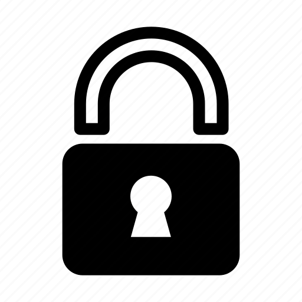

You can navigate around the website and find each major feature of RSA and an example of how to use it, you may start in Generate to generate yourself an RSA keypair. And then head over to the encryption section to make your first message, each section will explain what we are doing :D.
On this website we are using a library called JSEncrypt which handels all Decryption, Encryption, Generation, Singing, Verifyin and all other jobs related to handeling the RSA keys. This is imported from the cloudflare CDN so for people who want to be sure we would recommend generating the keys on PC as this allows for higher entropy when generating the RSA keys and also allows better verifability as browser based JS may be poisioned by the CDN.
RSA is an asymetric encryption. On a fundemental level this means that there is a private and public key, this public key can be known to everybody because it is mathmatically improbable(Not impossible, read on for more info) that you could find the factor of the private key from the public key NIST in there publication stated that an RSA key of 2048-bit's provides 112 bits of security or 5.192x10^33 posiblities. but because of there mathmatical link you can verify that message signed with a private key is correct because of the public key, but the only real way to get from a PuK to a PrK is by bruteforcing.
There is a problem with RSA, which also counts for ECC and most other public key encryptions. This is Quantam Computers running shor's algorithm. While traditional computing would require far longer than the lifetime of the universe with even all computing combined to break sufficiently long keys. Computing Quantam Computing with Shor's algorithm let's a sufficiently powerful Quantum Computer, which has 4096 Qubits for a key of 2048-bits. The article here talks about the threats of quantam computers. But as this moment in time using RSA 2048 or 4096 is sufficiently strong in terms of security and in time that this could be broken by Quantam Computers, there should be new PQC Encryption Standards to replace it.
Warning: We cannot recover any lost RSA keys as these are not stored anywhere so make sure to store your keypair in a safe location as anybody who can get his hands on this key can decrypt any previosly encrypted messages.
